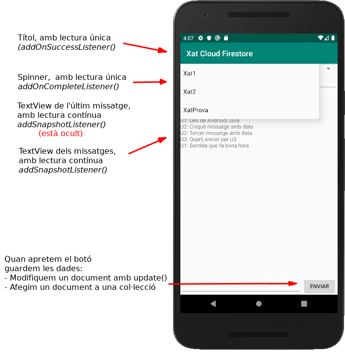

2.3.3.2 CF-Android: Accés a les dades
Referència a la Base de Dades i a les dades concretes a les quals volem accedir
Podrem fer referència, a bande de la Basede Dades, a cada col·lecció i/o a cada document de cada col·lecció
JAVA
// Referències a la Base de Dades i als documents
final FirebaseFirestore db = FirebaseFirestore.getInstance();
final DocumentReference docRef = db.collection("Xats").document("XatProva");observeu com no és cap impediment que ens toque definir-les com a final, ja que aquesta referència no ha de canviar en cap moment després d'inicialitzar-la. Si que podem fer canviar el seu valor, però la referència sempre ha d'apuntar al mateix lloc.
KOTLIN
L'equivalent en Kotlin serà:
// Referències a la Base de Dades i als documents
val db = FirebaseFirestore.getInstance()
val docRef = db.collection("Xats").document("XatProva")Guardar dades
L'operació de guardar ara consistirà en actualitzar un document. Tindrem 3 maneres d'actualitzar-lo:
Com acabem de comentar, accedim a tot un document dins d'una col·lecció.
Per a guardar dades, ens podem plantejar 3 operacions d'escriptura sobre el document:
- Sobreescriure'l tot: ho farem amb el mètode set()
- Esborrar-lo tot: amb el mètode delete()
- Modificar-lo: amb el mètode update()
Excepte per esborrar, per a les altres operacions ens fa falta saber l'estructura del document. Per això tant mètode set() com el mètode update() accepten com a paràmetre no una única dada, sinó una estructura que puga arribar a reflectir el document. Acceptaran com a paràmetre un Map<String, Object>, on podrem col·locar les claus i els valors de tots els membres del document. Cada valor pot ser dels tipus que vam practicar en el punt anterior: string, number, boolean, array, map, ...
La manera de col·locar un element en una estructura Map<> és amb el mètode put(), que acceptarà dos paràmetres: la clau i el valor.
En el nostre exemple guardarem en el moment d'apretar el botó. Inicialment ho farem sobre /Xats/XatProva/ultimUsuari i /Xats/XatProva/ultimMissatge, encara que després ho canviarem
JAVA
// Per a guardar dades
// Primer sobre /Xats/XatProva/ultimUsuari i /Xats/XatProva/ultimMissatge
// Després també com a documents en la col·lecció /Xats/XatProva/missatges
boto.setOnClickListener(new View.OnClickListener() {
@Override
public void onClick(View view) {
Map<String, Object> dades = new HashMap<>();
dades.put("ultimUsuari", usuari.getText().toString());
dades.put("ultimMissatge", text.getText().toString());
docRef.update(dades);
text.setText("");
}
});
KOTLIN
// Per a guardar dades
// Primer sobre /Xats/XatProva/ultimUsuari i /Xats/XatProva/ultimMissatge
// Després també com a documents en la col·lecció /Xats/XatProva/missatges
boto.setOnClickListener {
val dades = HashMap<String, Any>()
dades["ultimUsuari"] = usuari.text.toString()
dades["ultimMissatge"] = text.text.toString()
docRef.update(dades)
text.setText("")
}
Recuperar dades
També ens plantejarem els dos casos que ja ens vam plantejar en Realtime Database:
- Una única lectura
- Un listener que es quede escoltant per si hi ha canvis
Listener de lectura única: addOnSuccessListener()
Ara des de Android, per a fer la lectura única també ens plantejarem un listener, que quedarà més sòlid i que podrem actuar quan estiguem segurs que la dada ha arribat.
En realitat tenim més d'un listener per a comprovar com ha anat una lectura:
- addOnSuccessListener() s'activarà quan la tasca de lectura finalitza de forma exitosa
- addOnFailureListener() s'activarà quan la tasca de lectura NO ha finalitzat bé
- addOnCompleteListener() s'activarà quan la tasca de lectura ha finalitzat, de forma exitosa o no. El més normal serà comprovar dins d'ell si ha anat bé
Per simplificar, en aquest moment només tractarem el primer dels 3, ja que ens assegura que la lectura ha anat bé. Quan això haja passat ( onSuccess() ) podem utilitzar:
- getData() per a obtenir tot el document en un Map<String,Object>
- getId() per a obtenir el nom del document
- get(nomClau) per a obtenir directament el valor d'una clau del document
- getString(nomClau) per a obtenir el valor de la clau en forma de string
- getDouble(nomClau) per a obtenir el valor de la clau en forma de double
- ...
L'exemple d'única lectura el farem per a posar el títol de l'aplicació, com en l'exemple del Realtime Database.
I aquestes seran les sentències per a posar el títol de l'aplicació:
JAVA
// Exemple de lectura única: AddOnSuccessListener()
// Per a posar el títol. Sobre /Xats/XatProva/nomXat
docRef.get().addOnSuccessListener(new OnSuccessListener<DocumentSnapshot>() {
@Override
public void onSuccess(DocumentSnapshot documentSnapshot) {
String nomXat = documentSnapshot.getString("nomXat");
setTitle(nomXat);
}
});
KOTLIN
// Exemple de lectura única: AddOnSuccessListener()
// Per a posar el títol. Sobre /Xats/XatProva/nomXat
docRef.get().addOnSuccessListener { documentSnapshot ->
setTitle(documentSnapshot.getString("nomXat"))
}
Listener que es queda escoltant: addSnapshotListener()
De forma paral·lela al Realtime Database, si volem rebre una notificació de quan hi haja un canvi en el document que ens interessa, sobre una referència a aquest document ens muntarem un listener, en aquest cas amb el mètode addSnapshotListener(). Al mètode onEvent() que s'ha de sobreescriure arribarà un paràmetre de tipus DocumentSnapshot, que serà una còpia del document. Com en el cas anterior podrem fer sobre ell un getData() per a obtenir tot el document, getString(nomClau) per a obtenir el valor de la clau com un string, etc.
En el nostre exemple, de moment l'utilitzem tant per a posar l'últim missatge com per a anar omplit l'àrea central amb el xat.
JAVA
// Exemple de listener de lectura contínua addSnapshotListener() sobre un document
// Per a posar l'últim missatge registrat. Sobre /Xats/XatProva/ultimUsuari i /Xats/XatProva/ultimMissatge
docRef.addSnapshotListener(new EventListener() {
@Override
public void onEvent(@Nullable DocumentSnapshot documentSnapshot, @Nullable FirebaseFirestoreException e) {
ultim.setText(documentSnapshot.getString("ultimMissatge"));
area.append(documentSnapshot.getString("ultimUsuari") + ": " + documentSnapshot.getString("ultimMissatge") + "\n");
}
});
El més desitjable seria tractar els errors, cosa que no hem fet en aquest moment per simplicitat.
KOTLIN
// Exemple de listener de lectura contínua addSnapshotListener() sobre un document
// Per a posar l'últim missatge registrat. Sobre /Xats/XatProva/ultimMissatge
docRef.addSnapshotListener { documentSnapshot, e ->
ultim.text = documentSnapshot!!.getString("ultimMissatge")
area.append(documentSnapshot!!.getString("ultimUsuari") + ": " documentSnapshot!!.getString("ultimMissatge") + "\n")
}
Guardar documents
Ja sabem que l'estructura de col·leccions i documents, i que dins d'un document puc guardar col·leccions, en les quals hi haurà documents, ... amb una estructura que pot ser recursiva, convida a organitzar d'aquesta manera la informació: en compte d'utilitzar llistes (que també es pot però no són tan pràctiques), millor organitzar-ho en forma de subcol·leccions i documents. Anem a repetir el ja fet en el moment de Java, acoplant-lo a Android.
Per tant ens és necessària l'operació d'afegir un document a una col·lecció. Això en un principi ho aconseguiríem amb el mètode set() sobre un document nou de la col·lecció:
database.collection("nomCol").document("nomDoc").set(dades);però això ens obligaria a posar un nom a cada document. Ja havíem vist que Cloud Firestore era capaç de generar un nom de document que no es puga repetir. Des de Java s'aconsegueix amb el mètode add():
database.collection("nomCol").add(dades);però que en el nostre cas, per ser una subcol·lecció és un poc més llarg
database.collection("Xats").document("XatProva").collection("missatges").add(dades);L'estructura de les dades la podem fer amb un Map<string,object></string,object>, i posar-li en el nostre cas l'usuari i el missatge. D'aquesta manera ens quedaria ara el procediment en apretar el botó d'enviar el missatge, on a banda del que teníem abans per a modificar ultimMissatge i ultimUsuari, ara afegirem el document nou.
JAVA
// Per a guardar dades // Primer sobre /Xats/XatProva/ultimUsuari i /Xats/XatProva/ultimMissatge // Després també com a documents en la col·lecció /Xats/XatProva/missatges boto.setOnClickListener(new View.OnClickListener() { @Override public void onClick(View view) { Map<String, Object> dades = new HashMap<>(); dades.put("ultimUsuari", usuari.getText().toString()); dades.put("ultimMissatge", text.getText().toString()); docRef.update(dades); Missatge m = new Missatge(usuari.getText().toString(), text.getText().toString()); db.collection("Xats").document("XatProva").collection("missatges").add(m); text.setText(""); } });
KOTLIN
// Per a guardar dades
// Primer sobre /Xats/XatProva/ultimUsuari i /Xats/XatProva/ultimMissatge
// Després també com a documents en la col·lecció /Xats/XatProva/missatges
boto.setOnClickListener {
val dades = HashMap<String, Any>()
dades["ultimUsuari"] = usuari.text.toString()
dades["ultimMissatge"] = text.text.toString()
docRef.update(dades)
val m = Missatge(usuari.text.toString(), text.text.toString())
db.collection("Xats").document("XatProva").collection("missatges").add(m)
text.setText("")
}
Recuperar documents modificats
Ja només ens queda detectar els canvis en els documents de la col·lecció, per a afegir a l'àrea central els documents afegits. També és un addSnapshotListener(), però ara l'apliquem a una col·lecció (no a un document). El resultat és que d'una forma molt còmoda podrem detectar els documents afegits, els modificats i fins i tot els esborrats.
Ací tenim el fragment de programa que ens ho permetrà. En aquest exemple només hem deixat el cas de document afegit, i no hem posat els casos de document modificat i document esborrat, ja que en aquest exemple no ho utilitzem.
JAVA
// Exemple de listener de lectura contínua addSnapshotListener() sobre una col·lecció
// Per a posar tota la llista de missatges. Sobre /Xats/XatProva/missatges
db.collection("Xats").document("XatProva").collection("missatges").addSnapshotListener(new EventListener() {
@Override
public void onEvent(@Nullable QuerySnapshot snapshots, @Nullable FirebaseFirestoreException e) {
for (DocumentChange dc : snapshots.getDocumentChanges()) {
switch (dc.getType()) {
case ADDED:
area.append(dc.getDocument().getString("nom") + ": " + dc.getDocument().getString("contingut") + "\n");
break;
}
}
}
});
KOTLIN
// Exemple de listener de lectura contínua addSnapshotListener() sobre una col·lecció
// Per a posar tota la llista de missatges. Sobre /Xats/XatProva/missatges
db.collection("Xats").document("XatProva").collection("missatges").addSnapshotListener { snapshots, e ->
for (dc in snapshots!!.documentChanges) {
when (dc.type) {
DocumentChange.Type.ADDED -> {
area.append( dc.document.getString("nom") + ": " + dc.document.getString("contingut") + "\n")
}
}
}
}És de destacar que ara la còpia de les dades, el snapshot, és en realitat un QuerySnapshot. I és que nosaltres no hem fet cap consulta sobre els documents de la col·lecció, però és possible fer-la. Per exemple es podria seleccionar per mig d'una query tots els documents en què l'usuari és un determinat. Aleshores detectaríem els documents afegits, modificats o esborrats d'aquest usuari. Ho faríem en el moment de declarar el addSnapshotListener():
db.collection("Xats").document("XatProva").collection("missatges").whereEqualTo("usuari", "Usuari3").addSnapshotListener(new EventListener() {
O també podríem ordenar els documents per algun camp. Açò en realitat seria necessari per a poder ordenar els missatges, ja que el nom del document auto-generat per Cloud Firestore no és consecutiu, sinó aleatori, i per tant perfectament un document nou tinga un nom anterior a alguns dels existents. Ho arreglaríem fàcilment posant un camp més amb la data i ordenant per aquest camp amb orderBy() (que aniria en el lloc del whereEqualTo() de la sentència anterior). Ho farem en l'exemple complet de la següent pregunta.
Un altre exemple. Anem a fer una lectura única de tots els documents de la col·lecció principal Xats. Fins el moment hem treballat sempre sobre el document XatProva, però ho anem a generalitzar per a accedir a més d'un xat.
De moment ens aconformarem amb fer una lectura única de tots els documents del xat per a mostrar-los en un Spinner. Posteriorment, en l'exemple complet de la següent pregunta intentarem triar un xat o un altre per a que ens mostre els missatge de l'un o de l'altre.
Per a fer aquesta lectura única, ara utilitzarem un addOnCompletedListener() en compte del addOnSuccessLitener() de l'altra ocasió, i així veurem un poc la diferència de plantejament.
JAVA
// Exemple de llegir tots els documents d'una col·lecció
// Per a triar el xat
db.collection("Xats").get().addOnCompleteListener(new OnCompleteListener() {
@Override
public void onComplete(@NonNull Task task) {
if (task.isSuccessful()) {
ArrayList opcions = new ArrayList<>();
for (DocumentSnapshot document : task.getResult()) {
opcions.add(document.getId());
}
ArrayAdapter adaptador = new ArrayAdapter(pantPrincipal,android.R.layout.simple_spinner_item, opcions);
adaptador.setDropDownViewResource(android.R.layout.simple_spinner_dropdown_item);
comboXats.setAdapter(adaptador);
}
else {
}
}
});
Observeu que dins del mètode onComplete() (en compte del onSuccess() ) mirem ara si s'ha completat satisfactòriament la tasca amb task.isSuccessful(). Per simplicitat ara no fem res si no ha tingut èxit la lectura. Únicament tractem quan sí que ha tingut èxit, que aprofitem per a omplir el Spinner a partir d'un ArrayAdapter.
KOTLIN
// Exemple de llegir tots els documents d'una col·lecció
// Per a triar el xat
db.collection("Xats").get().addOnCompleteListener { task ->
if (task.isSuccessful) {
val opcions = ArrayList()
for (document in task.result!!) {
opcions.add(document.id)
}
val adaptador = ArrayAdapter(pantPrincipal, android.R.layout.simple_spinner_item, opcions)
adaptador.setDropDownViewResource(android.R.layout.simple_spinner_dropdown_item)
comboXats.adapter = adaptador
} else {
}
}
En aquesta imatge es veu el resultat, on s'intenta explicar cadascuna de les coses:

De moment el Spinner no fa res quan seleccionem una opció.
Ho intentarem en l'exemple complet de la següent pregunta.